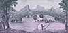
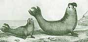

|
The
Islands of Juan
Fernandez |
|
|
|
| Piercy
Brett
was a lieutenant on board The Centurion and circumnavigated the world
with Commodore George Anson. He was responsible for drawings which
became part of the narrative of the journey. |
 |
|
|  |
Piercy
Brett. 'A View of The Commodore's Tent at the Island of Juan Fernandes'.
1748 |
|
|
|
 |
| Other
views of Juan Fernandez are found here |
Sea
Lions at Juan Fernandes |
|
A
view of the north east side of Masa-Feuro lying in the latitude of
33¡ 5' |
|
|
| A
view of the west side of Masa-Feuro distant 4 miles |
|
|